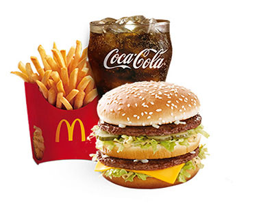

food
Disadvantages of food
Food processing does have some benefits, such as making food last longer and making products more convenient, however, there are drawbacks to relying on a lot of heavily processed foods. Whole foods and those that are only minimally processed, like frozen vegetables without any sauce, tend to be better for your health. An unhealthy diet high in fat, added sugar and salt, such as one containing a lot of highly-processed foods, can increase your risk for cancer, Type 2 diabetes and heart disease, according to the World Health Organization.

Added Sodium
One of the main sources for sodium in the diet is processed foods. Sodium is added to prevent spoilage, add flavor and improve the texture of these foods. Americans consume an average of 3,436 milligrams of sodium per day, which is way more than the recommended limit of 2,300 milligrams per day for healthy people, and more than twice the limit of 1,500 milligrams per day for those at increased risk for heart disease.Some research suggests that eating sugary foods can increase your risk of obesity, insulin resistance, type 2 diabetes, fatty liver disease, and heart disease .
Generally speaking, real food is lower in sugar than many processed foods.
Even though fruit contains sugar, it's also high in water and fiber, making it much healthier than soda and processed foods.
Added Sugars
While you don't need to limit the sugars found naturally in whole, unprocessed foods like fresh fruit, eating too much added sugar found in many processed foods can increase your risk for heart disease, obesity, cavities and Type 2 diabetes. The American Heart Association recommends women limit added sugars to no more than 100 calories, or 25 grams, and men limit added sugars to no more than 155 calories, or about 38.75 grams, per day. Currently, Americans consume an average of 355 calories from added sugars each day.
Nutrient Losses
Processing foods often involves nutrient losses, which can make it harder to meet your needs if these nutrients aren't added back through fortification or enrichment. For example, using high heat during processing can cause vitamin C losses. Another example is refined grains, which have less fiber, vitamins and minerals than whole grains. Eating refined grains, such as those found in many processed foods, instead of whole grains may increase your risk for high cholesterol, diabetes and obesity, according to a study published in "The American Journal of Clinical Nutrition" in December 2007.
Trans Fats
Foods that have undergone processing, including some commercial baked goods, desserts, margarine, frozen pizza, microwave popcorn and coffee creamers, sometimes contain trans fats. This is the most unhealthy type of fat, and may increase your risk for high cholesterol, heart disease and stroke. The 2010 Dietary Guidelines for Americans recommends keeping your trans fat intake as low as possible.
Other Potential Disadvantages
Processed foods may actually take less energy to digest than whole foods, according to a study published in "Food & Nutrition Research" in 2010, meaning you retain more of the calories they contain. Processed foods also tend to be more allergenic than whole foods, according to a June 2004 "Current Opinion in Allergy and Clinical Immunology" article. Although the preservatives and other food additives used in many processed foods are generally recognized as safe, a few may cause problems for some individuals, including sulfites, artificial sweeteners, artificial colors and flavors, sodium nitrate, BHA and BHT, olestra, caffeine and monosodium glutamate.
if you want tn know about disadvantges of fast food click on this photo
